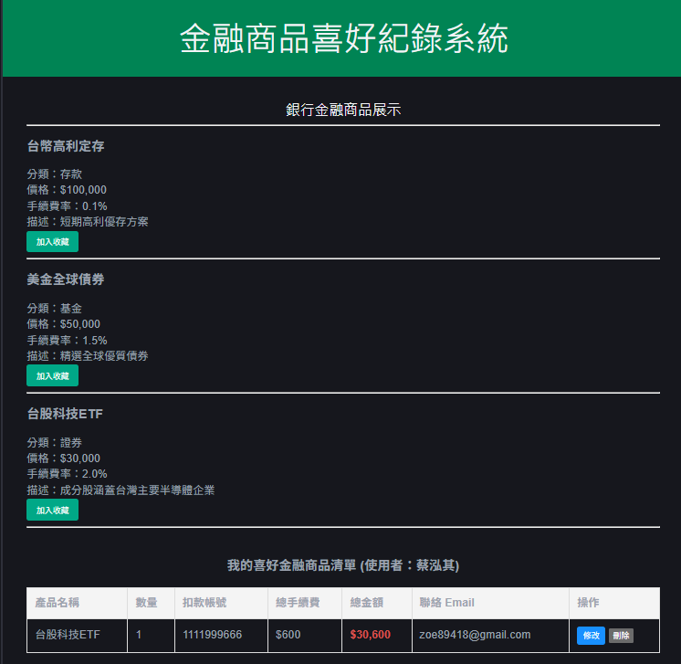

你好，我是 蔡泓其
精選作品 [點擊查看詳細]

銀行個人化喜好商品系統
本專案採用標準 3-Tier 架構 (Vue.js / Spring Boot / MySQL)，實作完整的產品 CRUD 功能。核心技術亮點：
- 嚴謹架構設計：後端嚴格遵循分層架構，並透過 Stored Procedure 提升效能。
- 交易一致性：實作 Transaction 管理，確保金融資料正確性。
- 資安防護實踐：具備防禦 SQL Injection 與 XSS 攻擊 之機制。
- DevOps 自動化：整合 Docker 與 PowerShell 腳本自動化初始化環境。
Spring Boot 3
Vue 3
Docker
基於聯邦學習的具位置隱私保護之停車推薦 (論文)
本研究開發一套能在不洩漏使用者原始數據的前提下，實現高效率停車位預測的智慧系統，主要技術貢獻如下：
- 分散式聯邦學習 (FL)：透過設備端本地訓練模型，僅上傳模型權重而非原始路徑數據，從根源降低數據洩漏風險並節省傳輸頻寬。
- 時間距離模糊化：針對位置隱私進行動態調整模糊化處理，在維持推薦精準度的同時，確保使用者行蹤安全。
- RNN-LSTM 序列預測：利用 LSTM 記憶門控機制處理停車場歷史與即時數據，捕捉長期時間依賴關係，達成高精確度的空位率預測。
- 5G C-V2X 整合：模擬車聯網通訊技術，支援 RSU 與車輛間的即時數據交換，提供系統所需的實時支持。
Federated Learning
LSTM
Python
PyTorch
成果發表於 APWCS 2024
老虎機遊戲開發 (Slot Games)
「結合數值邏輯與動態表現的網頁遊戲實作」
實作多款老虎機遊戲邏輯，專注於高效能渲染與複雜的遊戲數值計算，包含以下開發重點：
- 滾輪運算邏輯：實作自定義權重之滾輪隨機演算法，確保遊戲公平性與 RTP (Return to Player) 的數值穩定性。
- 數據優化：根據不同的情境要求，設計出不同的excel機率表。
- 狀態機管理：精確控制 Spin、Stop、Win、Bonus Game 等遊戲狀態切換，確保前後端資料同步。
Canvas / DOM
JavaScript (ES6+)
Game Logic
查看儲存庫